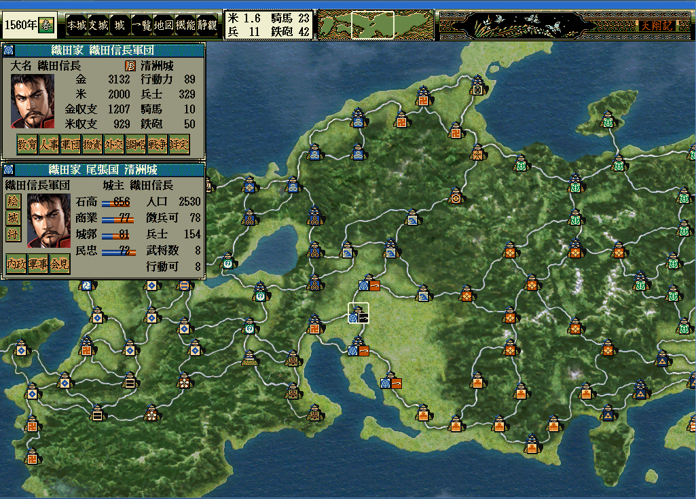
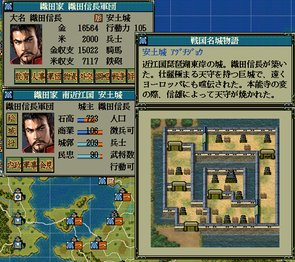

<div class="content-box mb-3 content-lighten">
    <h2><i class="fa fa-image fa-fw"></i>天翔記 HD版の画像リソースを抽出</h2>
</div>
<div class="content-box mb-3 content-lighten">
    <h3>概要</h3>
    <p>天翔記 95版 と 天翔記 HD版の両方を所持しいている方は、天翔記HD版の画像を抽出し、<br>
        95版へと利用したいと考える方もいることでしょう。</p>
</div>
<div class="content-box mb-3 content-lighten">
    <h3>HD版の画像抽出は簡単</h3>
    <p><a href="https://hd.xn--rssu31gj1g.jp/HD.php?page=HD_nobu_tool_get_resource_bin">HD版の画像の抽出</a> を参照してください。</p>
</div>
<div class="content-box mb-3 content-lighten">
    <h3>流用例</h3>
    <h4><a href="?page=nobu_mod_the_mapdatahd">ＨＤ版風の全国マップ</a></h4>
        <p></p>
    <h4><a href="?page=nobu_mod_the_castlemod_in_retsuden">城列伝・城内マップMod</a></h4>
        <p></p>
</div>
